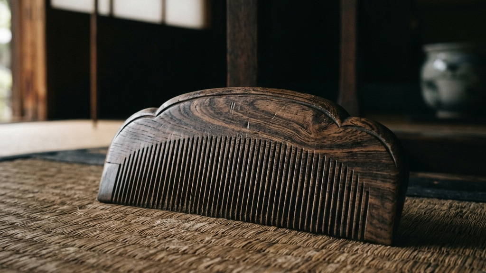
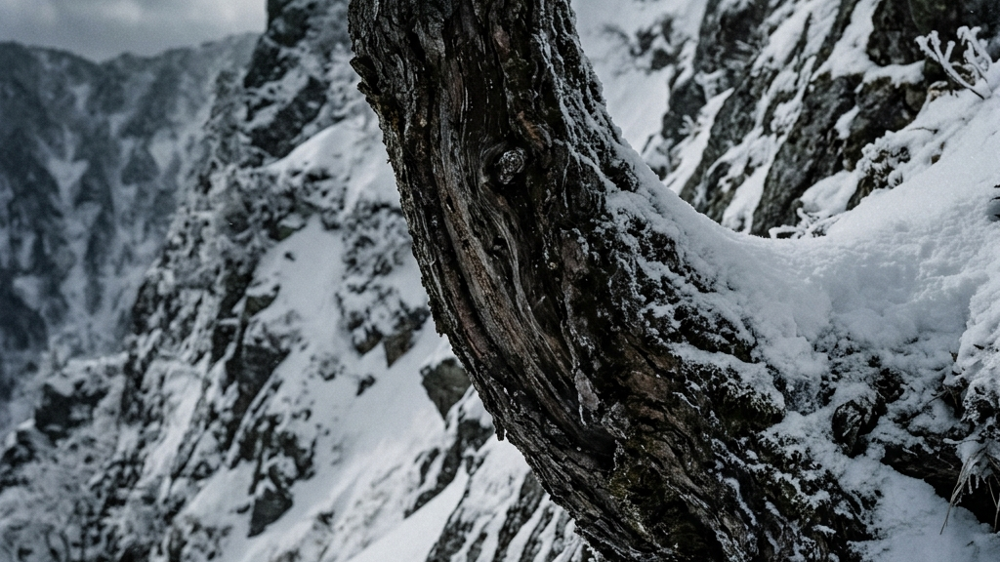
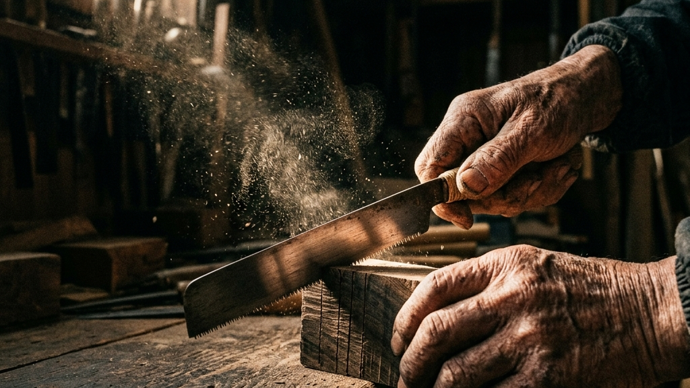
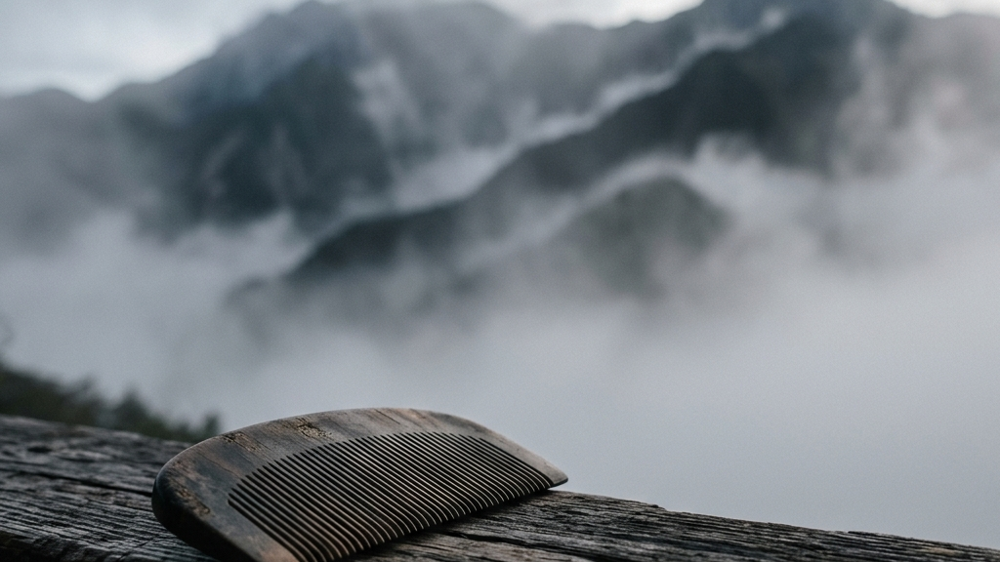
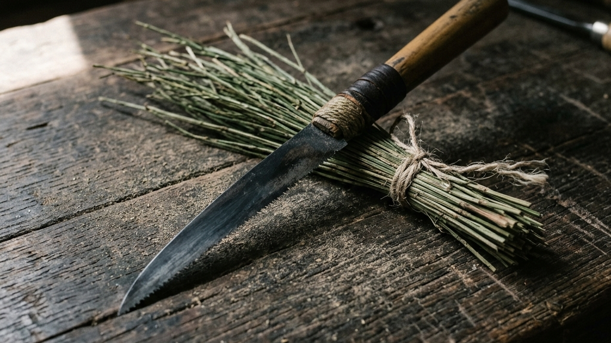
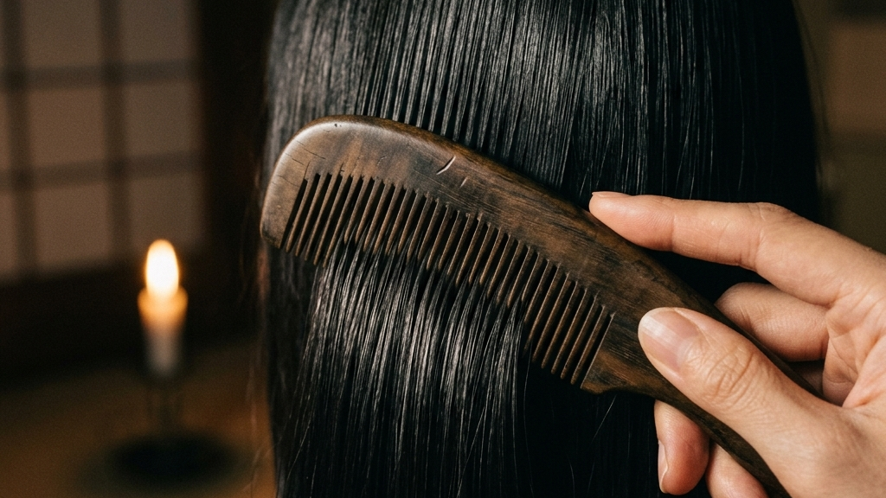
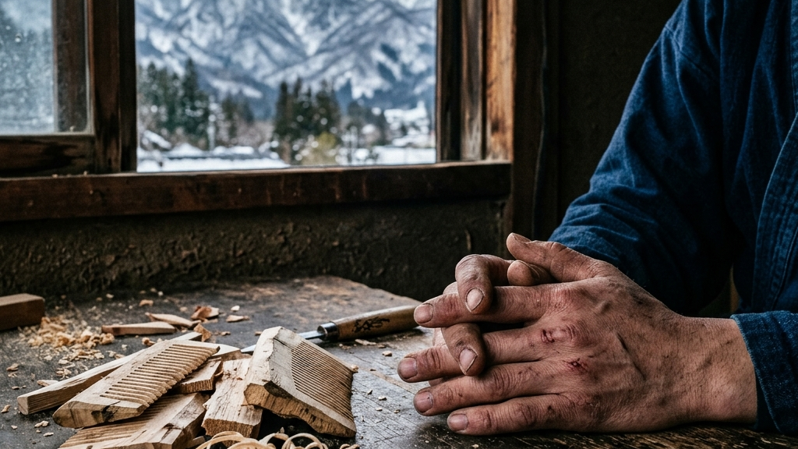
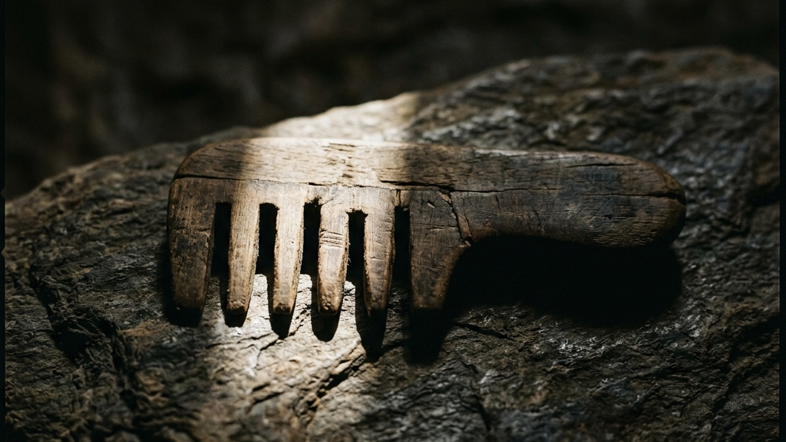

朝の光が差し込む部屋で、一本の櫛が髪を滑り降りる。聞こえるのは、木と髪が擦れ合う微細な摩擦の音だけです。日常に溶け込んでいる「髪を梳かす」行為。しかし、木曽の深い山岳で育まれた「お六櫛」を手にするとき、その極私の儀式は手仕事の記憶と結びつく時間へと昇華されます。自然が育て上げた強靭な木と、職人が研ぎ澄ました身体感覚。その二つが交錯する境界線で、一本の櫛は静かに生命を宿します。
【本稿で紐解く3つの核心】
現代の私たちは、ボタン一つで均一な製品が手に入り、あらゆる物事が瞬時に解決される速度の中に生きています。しかし、その便利な日常の裏側で、私たちの身体は何か大切な手触りを失いつつあるのかもしれません。お六櫛が持つ圧倒的な存在感は、そうした現代の速度に対する静かなるアンチテーゼとして、私たちの五感に直接語りかけてきます。木曽の冷涼な風、切り出された木材が経てきた果てしない沈黙の時間、そして職人の指先から放たれる圧倒的な熱量。それらが一本の櫛という小さな器の中に凝縮されているのです。なぜこの櫛は、私たちの髪を驚くほど滑らかに解きほぐし、心に静寂をもたらすのでしょうか。その理由を紐解くために、まずはこの道具の始まりである、木曽の深い森の奥深くへと足を踏み入れてみましょう。

お六櫛の美しさと機能性を支える最大の基盤は、その素材となる「みねばり（ミネバリ）」という木にあります。正式名称をオノオレカンバ（斧折樺）と呼ぶこの樹木は、その名の通り「斧が折れてしまうほどに硬い」ことで知られています。カバノキ科の落葉高木であり、本州の中部地方以北の、極めて標高が高く険しい山岳地帯の岩場に自生します。肥沃な平地とは程遠い、栄養の乏しい不毛な岩壁にしがみつくようにして、みねばりはゆっくりと成長していきます。
みねばりの成長速度は、他の樹木に比べて驚くほど緩やかです。一年にわずかコンマ数ミリという、目視することさえ困難な速度で年輪を重ねていきます。冷たい烈風が吹きすさび、冬には深い雪に閉ざされる木曽の過酷な環境において、この木は自己を極限まで凝縮させることで生き延びてきました。その結果として得られるのが、水に沈むほどの圧倒的な比重と、木材の中でも群を抜く硬度です。顕微鏡でみねばりの細胞を観察すると、導管が極めて微細で、繊維同士が隙間なく密着していることが分かります。この超高密度な物理的特性こそが、お六櫛の細く鋭い歯を挽いても折れない強度をもたらし、何十年もの使用に耐えうる耐久性を保証するのです。厳しい自然の理不尽に対して、ただ内側へ、内側へと密度を高めることで応えたみねばりの姿には、引き算の美学に通ずる静かな佇まいが宿っています。
しかし、切り出されたばかりのみねばりを、すぐに櫛へと加工することはできません。どれほど硬く強靭な木であっても、生木の間は内部に大量の水分を含んでおり、そのまま削れば必ず激しい歪みや割れが生じてしまいます。ここから、職人たちと「時間」との長い対話が始まります。切り出されたみねばりの板材は、まず数年間にわたり風通しの良い日陰で自然乾燥されます。その後、燻煙乾燥や煮沸処理などの伝統的な工程を経て、さらに何年も寝かされるのです。最終的にお六櫛として職人の鋸が入るまでに、最低でも十数年、長いものでは数十年もの歳月が費やされます。
この乾燥期間中、木は周囲の湿度変化に応じて息を吐くように水分を出し入れし、自らの内側に潜む狂いを徐々に表に出していきます。職人たちは、木が自律的に狂いを出し切るのをただ静かに待ち続けます。無理に急速乾燥させれば、木の組織は破壊され、みねばり本来のしなやかさは失われてしまうからです。木自身のペースに寄り添い、時間をかけること。この時間を厭わぬ地道な歩みの先にしか、決して得られない極上の強度が生まれます。それはまさに、用の枠を超えて時間を纏う美学へと昇華する瞬間であり、現代社会が忘れてしまった「待つこと」の豊かさを、私たちに静かに問いかけているかのようです。完全に狂いを出し切り、呼吸を落ち着かせたみねばりの板材だけが、ようやく職人の作業台へと運ばれる資格を得るのです。
雪深い木曽の山岳地帯で、樹齢百年を超える強靭なみねばりを目利きし、厳冬期に切り出します。
板材へと荒く切り分けた後、木曽の清冷な風を通しながら、数年かけてゆっくりと水分を抜いていきます。
煮沸や燻煙により木の樹脂を固定し、さらに奥深くで寝かせることで、微細な狂いを完全に出し切ります。

完全に乾燥し、狂いを克服したみねばりの板材が職人の前に置かれると、いよいよお六櫛の命である「歯」を切り出す「歯挽き（はびき）」の工程に入ります。お六櫛の最大の特徴は、その圧倒的な歯の細さと密度の高さにあります。最高級とされる「極細歯（ごくほそば）」の櫛では、わずか一インチ（約2.5センチメートル）の幅のなかに、三十本から四十本もの細い歯が寸分の狂いもなく並びます。一本の歯の幅は、わずかコンマ数ミリ。髪の毛よりもわずかに太い程度の極小の木片が、一糸乱れぬ美しさで屹立する様は、まさに人間技とは思えないミクロの世界です。
この驚異的な高密度を可能にしているのは、職人が「お六鋸（おろくのこ）」と呼ばれる専用の特殊な手鋸を用いて、一本ずつ手作業で溝を挽いていく手技です。歯挽きの作業中、職人は定規や下書き用の線を一切使いません。木工用の万力に固定された小さなみねばりの板に対し、左手の親指の爪を鋸のガイドとし、右手に持った鋸を前後に動かします。鋸の刃が木に食い込む感覚、木地を削る音の高さ、そして指先に伝わる超微細な振動だけを頼りに、等間隔に溝を刻み込んでいくのです。みねばりは天然の素材であり、どれほど長い乾燥期間を経ても、部位によって木目の流れや硬さに微妙な個体差が存在します。機械で均一に削ろうとすれば、刃が硬い木繊維に弾かれて不均一になったり、弱い部分が破断したりしてしまいます。職人は、鋸を引く瞬間に指先へ返ってくる抵抗を瞬時に知覚し、木の声を聞くかのように鋸の角度や押し込む力をリアルタイムで微調整します。それはまさに、医師が患部の状態を手探りで把握しながら執刀する「臨床的な感覚」そのものです。自らを無にし、ただ技術を宿すという奈良墨の継承に通底する静かなる闘いと美学が、この薄暗い工房の作業台の上にも確かに息づいています。
お六櫛の技術継承において、文字で書かれたマニュアルや数値化されたカリキュラムは存在しません。何ミリの力で引くか、どの角度で鋸を構えるかといった核心的な技術は、言語化することが極めて困難だからです。新米職人は、師匠の作業台のすぐ脇に座り、その背中の傾き、肘の動き、そして鋸を挽くリズムと呼吸の同期を、ただ何百時間、何千時間と見つめ続けることから始めます。師匠の身体から放たれる微細な気配を、自身の五感を通じて丸ごとコピーするように身体にインストールしていくのです。脈々と流れる手技という名の記憶を繋ぐために、若き職人は自らの頭で考えることを一度手放し、身体全体の感覚を伝統という巨大な型に同調させていきます。そうして挽き出された四十本の歯は、単なる幾何学的な均一性ではなく、どこか有機的な揺らぎを伴った深い美しさを湛えます。それは、職人の呼吸と木魂が交錯した痕跡であり、一本ずつ魂を込めて刻まれた静かな「祈り」の結晶に他なりません。

お六櫛という愛らしい名を持つこの道具には、三百年以上にわたり受け継がれてきたロマンあふれる伝説と、その伝説の祈りを宿すための極めて緻密な物理的意匠が宿っています。中山道の険しい山道を旅する人々にとって、お六櫛は単なる実用品を越えた、ある特別な意味を持つ工芸品でした。それは、人々の身体の痛みを和らげ、心に安らぎをもたらす「祈りの形」そのものだったのです。
この美しい櫛の起源は、江戸時代の前期、元禄年間（1688〜1704年）の木曽宿にまで遡ります。伝説によれば、現在の木祖村薮原の地に、「お六」という名の若く美しい娘が暮らしていました。彼女はいつの頃からか、耐え難いほどの激しい頭痛に悩まされるようになり、あらゆる薬や治療を試みても一向に快復の兆しが見えませんでした。万策尽きたお六は、自らの命を救うため、古くから信仰の山として崇められてきた「御嶽山（おんたけさん）」に登り、一心に平癒の願をかけました。
満願の日の明け方、お六の枕元に山の神が顕現し、「みねばりの木で細い歯の櫛を作り、それで毎日髪を梳かしなさい」という厳かな神託（お告げ）を授けました。夢から覚めたお六は、ただちにみねばりの木を探し出し、精巧な極細の歯を持つ木櫛を作りました。そして、お告げに従って毎日優しく髪を梳き続けたところ、長年彼女を苦しめていた激しい頭痛が、まるで嘘のように綺麗に消え去ってしまったのです。この奇跡の噂は瞬く間に広まり、娘の名を取って「お六櫛」と呼ばれるようになりました。江戸と京都を結ぶ中山道の中間地点に位置する宿場町・薮原を通り過ぎる多くの旅人たちが、このお六櫛を競って買い求め、お守りとして、あるいは愛する人へのお土産として全国へと持ち帰ったのです。旅人たちの手から手へ、そして口から口へと語り継がれた「頭痛を癒す不思議な櫛」のロマンは、お六櫛のブランドを絶対的なものとし、旅の安全を祈るための象徴として中山道の街道文化を鮮やかに彩り続けました。
お六伝説が伝える癒やしの力は、単なる神秘的なオカルトではありません。現代の物理的な視座から解剖すると、そこには驚くほど合理的な機能美（造形幾何学）が隠されていることが分かります。お六櫛の最も特徴的な意匠は、櫛の中央を水平に走る「しのぎ（稜線）」と呼ばれる稜線構造にあります。お六櫛の板材は、平らな一枚の板ではなく、中央が最も厚く、上下の両端に向かって緩やかになだらかな傾斜（山型）を描くように削り出されています。日本刀の刃に走る「鎬（しのぎ）」にそっくりなこの形状こそが、お六櫛の卓越した強度と美しさを両立させる核心的な幾何学なのです。
職人は、乾燥させたみねばりの板に対し、「粗鉋（あらしかんな）」と「上鉋（じょうかんな）」という独自のカンナを極めて緻密に引き分け、コンマ数ミリ単位でこの山型の傾斜を削り出します。もし全体が均一に薄い板であれば、一インチに四十本もの極細の歯を挽き分けた際、櫛全体の強度は劇的に低下し、少しの力で真っ二つに割れてしまいます。しかし、中央に強固な背骨としての「しのぎ」を厚く残すことにより、極小の歯を支えるための物理的な曲げ強度（剛性）が劇的に向上するのです。さらに、この傾斜構造は、櫛を握った際の人間の手のひらに完璧にフィットする人間工学的（エルゴノミクス）な役割も果たしています。握る指先に余計な力を入れずとも、手首の滑らかなスナップだけで髪を優しく梳き下ろすことができる。機能性を追求した先にしか現れない、この静謐な稜線の幾何学美は、機械的な大量生産品が絶対に真似のできない、手仕事の知恵の結晶です。

お六櫛の神業とも言える「一インチに四十本の歯」を削り出すプロセスは、単に職人の腕前が良いというだけでは説明がつきません。その極限の手技を物理的に支えているのは、職人が「自分の道具を自ら創造する」という圧倒的な覚悟と、天然の植物を用いた驚くほど緻密な仕上げの技術です。モノを創る人間が、自らの感覚を拡張するための「触手」として道具を研ぎ澄ます。その徹底したモノづくりのアプローチに、私たちは深い敬意を抱かざるを得ません。
お六櫛の歯を挽き出すために使用される「お六鋸（おろくのこ）」は、金物屋で買い求めることはできません。このこの世に二つとない極薄の鋸は、職人が自らの手で一から叩き出し、削り出して作り上げる「自作の道具」なのです。鋸の基盤となる鋼（はがね）には、古い振り子時計の「ゼンマイ鋼」などが用いられます。職人は、この強靭でしなやかなゼンマイの鋼を極限まで薄く削り、ヤスリを当ててコンマ数ミリの間隔で一つずつ「目立て（歯を作る作業）」を行います。その刃の薄さはわずか0.2ミリメートル以下。まさにカミソリの刃のような極薄の鉄片に、寸分の狂いもなく鋸の歯を刻み込んでいくのです。
なぜ、ここまでして道具を自作するのでしょうか。それは、みねばりの木目と対話し、コンマ数ミリの間隔で歯を正確に挽き分けるためには、職人の指先の感覚が鋸の刃先まで完璧に100%伝わらなければならないからです。自分の手の大きさ、握力、鋸を引くクセ、そして挽くべきみねばりの硬さに合わせて、鋸の「アサリ（刃の開き）」やしなり具合を限界まで微調整する。道具を創るというプロセス自体が、すでに工芸の始まりであり、職人が自らの五感を拡張して木と同調するための神聖な儀式なのです。道具を単なる手段として消費する現代の視座から離れ、道具そのものと命を分け合うかのように深く対話する。この妥協なき姿勢こそが、お六櫛に宿る圧倒的な説得力の源泉です。
歯を挽き終わったお六櫛は、まだ完成ではありません。鋸で挽き裂かれたばかりの歯の両脇や歯先には、目に見えない無数の「バリ（木のささくれ）」が残っています。このまま髪を通せば、バリが髪の毛の表面を傷つけ、激しい痛みや枝毛を引き起こしてしまいます。お六櫛のクオリティを決定づける最後の終端は、このバリを完璧に取り除き、歯先の一本一本を完璧に丸く整える「歯摺り（はすり）」と「トクサ仕上げ」の工程です。ここで使われるのは、金属のヤスリや化学研磨剤ではなく、天然の植物である「砥草（とくさ）」です。
トクサ科の多年草である砥草の茎の表面には、微細な無水ケイ酸（シリカ）の結晶が驚くほど高密度に整列しており、古来より「天然のサンドペーパー」として工芸品の研磨に用いられてきました。職人は、乾燥させた砥草を平らに広げたり、細く裂いて束ねたものを使い、櫛の歯の隙間一本一本に砥草を通して、狂気とも思える執念でヤスリがけを繰り返します。金属製の研磨道具では木を削りすぎて角を壊してしまいますが、多孔質な砥草の繊維は、みねばりの油分を優しく吸い上げながら、余分なささくれだけを完璧に削り落とし、理想的な「球体」に近い丸みを歯先に与えてくれます。この気が遠くなるようなプロセスの終端に、髪の毛に一切の引っかかりを与えず、頭皮を優しく愛撫するような極上の肌触りが誕生します。天然の木を、天然の植物で磨き上げ、人間の身体へと調和させる。この大いなる自然の循環が生み出す用の美は、世代を超えて受け継がれるべき人類の資産です。
親子三代で使い繋ぐための「お手入れ」の原則

お六櫛が持つ美しさは、単に視覚的な工芸品としての美しさに留まりません。その本来の価値は、私たちの手の中で、そして髪の上で実際に使われた瞬間にこそ現れます。工芸が目指すべき究極の到達点である「用の美」が、お六櫛の物理的な調和の中に完璧に体現されているのです。プラスチックや金属などの現代的な素材で作られた大量生産の櫛と、伝統的な手仕事で生み出されたみねばりのお六櫛。その間には、私たちの髪の潤いや頭皮への刺激において、科学的・物理的な圧倒的な差異が存在します。
髪を梳かす際、最も恐れるべきは「静電気」です。化学繊維やプラスチック製の櫛で髪を梳かすと、摩擦によって強い静電気が発生し、髪のキューティクルが剥がれ落ちる原因となります。乾燥した髪同士が反発し合い、広がって傷んでしまうのです。これに対し、超高密度なみねばりの木繊維は、静電気を帯びにくいという優れた物理的特性を持っています。さらに、職人が仕上げの工程で櫛全体に「椿油（つばきあぶら）」をじっくりと染み込ませることにより、木地と髪の滑りやすさは極限まで高められます。
椿油は、人間の皮脂に近いオレイン酸を豊富に含んでおり、みねばりのミクロの細胞隙間に深く浸透して保持されます。この櫛で髪を梳かすと、摩擦による熱や静電気が完全に遮断されるだけでなく、櫛の歯から髪の毛一本一本へと微細な油分が均一に移行していきます。剥がれかけていたキューティクルが優しく密着し、髪本来の光沢が臨床的に蘇生されていくのです。使い込むほどに木肌は深い飴色へと変化し、髪にはしっとりとした上品な艶が宿るようになります。道具を愛用することが、そのまま自己の身体を慈しむことへと繋がっていく。この幸福な循環こそが、民藝運動の巨匠たちが唱えた用の美の証明が示す、生活と芸術の融和の美学に他なりません。
また、お六櫛の歯の一本一本には、職人の手技だからこそ実現できる微細な「テーパー（先細り加工）」が施されています。歯の根元は太く頑丈に、先端に向かうにつれてコンマ数ミリ単位で極めて滑らかに細くなっていくのです。さらに、手作業で削り出された歯には、数値では計測できない極めてわずかな「不均一さ」が残されています。この微小なゆらぎと、みねばり自身の持つしなやかな弾力性が相まって、頭皮に触れた瞬間に極上の柔らかいクッション効果をもたらします。
機械で完璧に均一に削られた櫛は、頭皮に対して一点集中で強い刺激を与えてしまいがちですが、お六櫛の歯は頭部の丸みに合わせてしなやかに「しなり」、全体の圧力を均等に分散させます。髪が絡まった際にも、櫛自身が優しく受け流すようにしなって髪が切れるのを防ぎます。木という天然の他者をコントロールし尽くすのではなく、その柔軟性を活かして人間と共鳴させる設計。この意図された不均一さがもたらす優しさは、触覚を通じて私たちの脳に深いリラクゼーションをもたらし、髪を梳かす時間を至高の瞑想へと変えてくれるのです。
| 素材の種類 | 静電気の発生率 | 頭皮への刺激と「しなり」 | 長期的な毛髪への影響 |
|---|---|---|---|
| みねばり（お六櫛） | ほぼゼロ（椿油との相乗効果で静電気を完全中和） | 頭部の丸みに沿ってしなやかに圧力を分散 | キューティクルを整え、自然な艶と潤いを蘇生 |
| プラスチック・樹脂 | 極めて高い（摩擦によって髪の広がりを誘発） | 硬く均一すぎて、頭皮に局所的な痛みを与える | 静電気による剥離が進み、枝毛や切れ毛の原因に |

この完成された用の美の背後には、伝統を途絶えさせまいと木曽の山奥へ移り住み、過酷な修行の日々に身を投じた若き新米職人の泥臭い葛藤のドラマが存在します。長野県木曽郡木祖村薮原。かつて中山道の宿場町として栄え、お六櫛の産地として名を馳せたこの歴史ある集落も、現代の需要縮小と後継者不足により、職人の数は片手で数えるほどにまで減少してしまいました。その消えゆく火を繋ぎ止めるため、東京での安定した都市生活を捨て、縁もゆかりもない木曽の地へ単身移住した一人の若者がいます。
東京という、あらゆるサービスが24時間提供され、情報と刺激が絶え間なく押し寄せる超高速の都市。そこでの生活に慣れ親しんだ若者にとって、木曽の山奥での暮らしは、まさに「利便性の完全な喪失」から始まりました。夜になれば辺りは漆黒の闇に包まれ、冬には深い雪が静かに積もり、集落全体が沈黙に支配されます。スマートフォンの画面をスクロールして得られる刹那的な充足感はそこにはなく、ただ目の前の厳しい自然と、自分自身という無防備な存在だけが取り残されるのです。
最初は、都会の速度から切り離されたことへの焦燥感や、深い孤独に心が押し潰されそうになる夜もありました。しかし、静まり返った工房で独り、冷たい空気を吸い込みながら木の繊維と対峙するうちに、若者の心境に静かな変化が生まれ始めます。外的な刺激や情報のノイズを徹底的に削ぎ落とした「沈黙の空間」だからこそ、自分自身の内なる声や、木が発する微細な主張（硬さや反り）に対して、五感が極限まで研ぎ澄まされていくのです。便利さに隠されて麻痺していた感覚を呼び戻し、自らを土地の自然に溶け込ませていくこと。それは、自然の過酷さを受け入れながら美を育てる内山紙の純白を育む雪晒しのように、自らの魂をゆっくりと浄化させ、工芸の器へと仕立て直していく静かなる順応のプロセスでした。
しかし、生活環境への順応以上に苛酷だったのは、手仕事の圧倒的な「思い通りにいかなさ」でした。師匠の鮮やかな手並みを見ていると、自分でも簡単に鋸が引けるように錯覚してしまいます。しかし、いざ自分が鋸を握り、みねばりの板に刃を当てると、鋸は木目の硬さに阻まれてあさっての方向へ逃げてしまい、一本の真っ直ぐな歯さえ挽くことができません。わずかコンマ数ミリでも力が狂えば、それまで挽いてきた数十本の歯がすべて台無しになり、一瞬でただの木片へと戻ってしまいます。何百本ものみねばりを削り、そのすべてをゴミ箱へと葬り去る日々。手のひらは無数のマメで覆われ、指先は鋸の摩擦で血が滲みました。
「なぜ、これほど努力しているのにできないのか」という焦りと、東京に残してきた友人たちの華やかなキャリアに対する劣等感が、若者の胸をかきむしります。しかし、お六櫛の修行において、自己満足の言い訳や小手先のテクニックは一切通用しません。目の前にある「挽き損じた歪んだ櫛」という冷厳な事実（ファクト）だけが、自分の技術の未熟さを鏡のように静かに突きつけます。若者は、ちっぽけなプライドや「早く上手くなりたい」という焦り（タイパ的な衝動）を一度すべて捨て去るしかありませんでした。失敗の山をただの敗北として片付けるのではなく、自らの身体感覚を木に適応させるための「学びの地層」として受け入れること。その泥臭い自己受容の連続を経て、若者はようやく、木を力で支配するのではなく、木と鋸と自らの呼吸が完全に調和する静寂の境地を、その傷だらけの手の中に掴みかけ始めています。
「木が狂うのは、木が生きていた証拠です。
— 若き職人が語る、みねばりとの対話の真髄
その狂いを真っ直ぐに直すのではなく、狂いに合わせてこちらの鋸の引き方を変えるのです。」

お六櫛の技術継承と、そこに身を投じる若き職人の歩みを見つめるとき、私たちは一つの重大な東洋の哲理に突き当たります。それは、「コントロール不能な他者（自然）を前にしたとき、人間はどのように在るべきか」という問いに対する、極めて静かで力強い答えです。私たちは普段,仕事や日常生活において、あらゆる物事を自分の思い通りに制御（コントロール）しようと躍起になっています。計画を立て、予測し、狂いを排除することが、現代における「合理性」の正解であると頑なに信じ込んでいるからです。しかし、伝統工芸の世界、とりわけみねばりという強靭で不規則な天然木を相手にするお六櫛の制作においては、その傲慢な支配の論理は一瞬で崩れ去ります。
生きてきた年月や育った斜面の角度によって、木は一本一本、全く異なる個性を持ちます。素直に真っ直ぐ伸びた木もあれば、烈風にねじ曲げられ、内部に強烈な反発のエネルギーを秘めた木もあります。これらは人間にとって、あらかじめ予測することも、強引に力でねじ伏せることもできない「理不尽な不確実性」そのものです。お六櫛の職人は、この思い通りにならない天然木の狂いや抵抗を前にしたとき、決して力づくで木を真っ直ぐに矯正しようとはしません。木をねじ伏せようとすれば、木は反発して割れるか、鋸の刃を食いちぎって自壊してしまうからです。
職人が取る唯一の、そして最もソリッドなアプローチは、「木をコントロールしようとする努力を手放す」ことです。目の前にある木の反り、繊維のねじれ、年輪の粗密といった不規則性をありのままに「受容」し、その上で、素材ではなく「自分自身の身体の動かし方」を極限まで微調整し、木に寄り添わせて最適化していくのです。木が右へ逃げようとするならば、指先の圧力をコンマ数ミリ左へ逃がす。木が鋸の刃を拒絶するならば、呼吸を一段深くして鋸を引く速度を遅らせる。対象を変えようとするのではなく、対象を受け入れて自らの行動を変えること。この引き算の思想から生まれるしなやかな強さこそが、お六櫛の極細の歯を挽き分ける唯一の鍵であり、不確実な世界と対峙する上での最も本質的な強靭さに他なりません。
この「コントロールを手放し、受容から己を最適化する」という姿勢は、現代の私たちが抱える様々な生きづらさや、組織マネジメントにおける焦燥感に対しても、極めて深いインサイトを与えてくれます。私たちは、思い通りにならない部下、予測のつかない市場、そして理不尽な育児の現場などに直面したとき、つい相手を力で制御しようとして疲弊し、感情的なイライラに飲み込まれてしまいがちです。しかし、どれほど理詰めの成功体験や緻密なルールを適用しようとしても、生命の本質的な不規則性をコントロールし尽くすことは不可能です。大切なのは、制御できない不規則性をすべて直視し、一度そのまま受け入れること。そして、他者を変えようと力むのをやめ、自らの立ち振る舞いや意思決定のあり方を、その事実（ファクト）に合わせて柔軟に適応させていく覚悟を持つことです。
木曽の深い沈黙の中で、何十年もの時間をかけて乾燥されたみねばりの木に、職人が呼吸を合わせて一本ずつ歯を刻み込んでいく。この途方もなく時間をかけ、かつ徹底的に身体的な対話の連続性の先にしか宿らない完璧な美。それこそが、速さと効率ばかりを追い求める現代社会において、私たちが本質的に渇望している「至高の贅沢」ではないでしょうか。利便性を越えた先にある、生命の手触りと記憶。その尊い財産を、自らの人生を投じて次世代へと繋ぎ続ける若き職人の傷だらけの手。その指先が紡ぎ出す極細の歯が、今日も誰かの髪を優しく解きほぐし、忘れかけられていた静寂を、私たちの心へと取り戻していくのです。
Reference:
伝統の「お六櫛」技術継承へ 東京からの新米職人の挑戦
伝統を身に纏い、1,000年先の未来へ遺す。Kakeraが織り上げる西陣織アロハシャツの哲学と私たちの物語は、CONCEPT、Kakera Aloha、およびABOUTよりご覧いただけます。